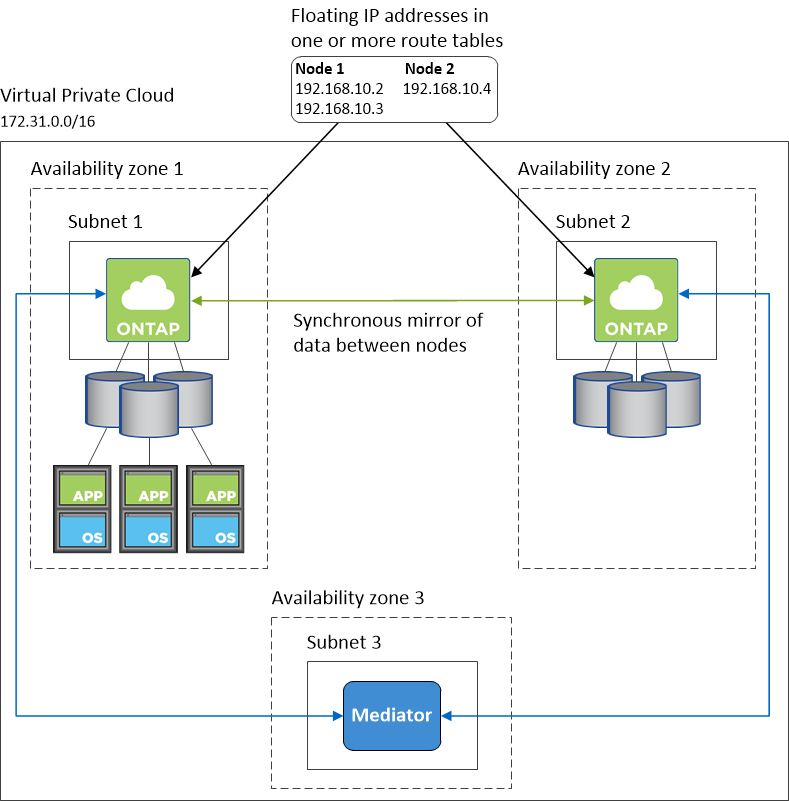

Networking requirements for Cloud Volumes ONTAP in AWS
Contributors
 Download PDF of this page
Download PDF of this page
Set up your AWS networking so Cloud Volumes ONTAP systems can operate properly.
General requirements for Cloud Volumes ONTAP
The following requirements must be met in AWS.
- Outbound internet access for Cloud Volumes ONTAP nodes
-
Cloud Volumes ONTAP nodes require outbound internet access to send messages to NetApp AutoSupport, which proactively monitors the health of your storage.
Routing and firewall policies must allow AWS HTTP/HTTPS traffic to the following endpoints so Cloud Volumes ONTAP can send AutoSupport messages:
-
https://support.netapp.com/aods/asupmessage
-
https://support.netapp.com/asupprod/post/1.0/postAsup
If you have a NAT instance, you must define an inbound security group rule that allows HTTPS traffic from the private subnet to the internet.
-
- Outbound internet access for the HA mediator
-
The HA mediator instance must have an outbound connection to the AWS EC2 service so it can assist with storage failover. To provide the connection, you can add a public IP address, specify a proxy server, or use a manual option.
The manual option can be a NAT gateway or an interface VPC endpoint from the target subnet to the AWS EC2 service. For details about VPC endpoints, refer to AWS Documentation: Interface VPC Endpoints (AWS PrivateLink).
- Number of IP addresses
-
Cloud Manager allocates the following number of IP addresses to Cloud Volumes ONTAP in AWS:
-
Single node: 6 IP addresses
-
HA pairs in single AZs: 15 addresses
-
HA pairs in multiple AZs: 15 or 16 IP addresses
Note that Cloud Manager creates an SVM management LIF on single node systems, but not on HA pairs in a single AZ. You can choose whether to create an SVM management LIF on HA pairs in multiple AZs.
A LIF is an IP address associated with a physical port. An SVM management LIF is required for management tools like SnapCenter.
-
- Security groups
-
You do not need to create security groups because Cloud Manager does that for you. If you need to use your own, refer to Security group rules.
- Connection from Cloud Volumes ONTAP to AWS S3 for data tiering
-
If you want to use EBS as a performance tier and AWS S3 as a capacity tier, you must ensure that Cloud Volumes ONTAP has a connection to S3. The best way to provide that connection is by creating a VPC Endpoint to the S3 service. For instructions, see AWS Documentation: Creating a Gateway Endpoint.
When you create the VPC Endpoint, be sure to select the region, VPC, and route table that corresponds to the Cloud Volumes ONTAP instance. You must also modify the security group to add an outbound HTTPS rule that enables traffic to the S3 endpoint. Otherwise, Cloud Volumes ONTAP cannot connect to the S3 service.
If you experience any issues, see AWS Support Knowledge Center: Why can’t I connect to an S3 bucket using a gateway VPC endpoint?
- Connections to ONTAP systems in other networks
-
To replicate data between a Cloud Volumes ONTAP system in AWS and ONTAP systems in other networks, you must have a VPN connection between the AWS VPC and the other network—for example, an Azure VNet or your corporate network. For instructions, see AWS Documentation: Setting Up an AWS VPN Connection.
- DNS and Active Directory for CIFS
-
If you want to provision CIFS storage, you must set up DNS and Active Directory in AWS or extend your on-premises setup to AWS.
The DNS server must provide name resolution services for the Active Directory environment. You can configure DHCP option sets to use the default EC2 DNS server, which must not be the DNS server used by the Active Directory environment.
For instructions, refer to AWS Documentation: Active Directory Domain Services on the AWS Cloud: Quick Start Reference Deployment.
Requirements for HA pairs in multiple AZs
Additional AWS networking requirements apply to Cloud Volumes ONTAP HA configurations that use multiple Availability Zones (AZs). You should review these requirements before you launch an HA pair because you must enter the networking details in Cloud Manager.
To understand how HA pairs work, see High-availability pairs.
- Availability Zones
-
This HA deployment model uses multiple AZs to ensure high availability of your data. You should use a dedicated AZ for each Cloud Volumes ONTAP instance and the mediator instance, which provides a communication channel between the HA pair.
- Floating IP addresses for NAS data and cluster/SVM management
-
HA configurations in multiple AZs use floating IP addresses that migrate between nodes if failures occur. They are not natively accessible from outside the VPC, unless you set up an AWS transit gateway.
One floating IP address is for cluster management, one is for NFS/CIFS data on node 1, and one is for NFS/CIFS data on node 2. A fourth floating IP address for SVM management is optional.
A floating IP address is required for the SVM management LIF if you use SnapDrive for Windows or SnapCenter with the HA pair. If you don’t specify the IP address when you deploy the system, you can create the LIF later. For details, see Setting up Cloud Volumes ONTAP. You need to enter the floating IP addresses in Cloud Manager when you create a Cloud Volumes ONTAP HA working environment. Cloud Manager allocates the IP addresses to the HA pair when it launches the system.
The floating IP addresses must be outside of the CIDR blocks for all VPCs in the AWS region in which you deploy the HA configuration. Think of the floating IP addresses as a logical subnet that’s outside of the VPCs in your region.
The following example shows the relationship between floating IP addresses and the VPCs in an AWS region. While the floating IP addresses are outside the CIDR blocks for all VPCs, they’re routable to subnets through route tables.

Cloud Manager automatically creates static IP addresses for iSCSI access and for NAS access from clients outside the VPC. You don’t need to meet any requirements for these types of IP addresses. - Transit gateway to enable floating IP access from outside the VPC
-
Set up an AWS transit gateway to enable access to an HA pair’s floating IP addresses from outside the VPC where the HA pair resides.
- Route tables
-
After you specify the floating IP addresses in Cloud Manager, you need to select the route tables that should include routes to the floating IP addresses. This enables client access to the HA pair.
If you have just one route table for the subnets in your VPC (the main route table), then Cloud Manager automatically adds the floating IP addresses to that route table. If you have more than one route table, it’s very important to select the correct route tables when launching the HA pair. Otherwise, some clients might not have access to Cloud Volumes ONTAP.
For example, you might have two subnets that are associated with different route tables. If you select route table A, but not route table B, then clients in the subnet associated with route table A can access the HA pair, but clients in the subnet associated with route table B can’t.
For more information about route tables, refer to AWS Documentation: Route Tables.
- Connection to NetApp management tools
-
To use NetApp management tools with HA configurations that are in multiple AZs, you have two connection options:
-
Deploy the NetApp management tools in a different VPC and set up an AWS transit gateway. The gateway enables access to the floating IP address for the cluster management interface from outside the VPC.
-
Deploy the NetApp management tools in the same VPC with a similar routing configuration as NAS clients.
-
Example HA configuration
The following image shows an optimal HA configuration in AWS operating as an active-passive configuration:

Requirements for the Connector
Set up your networking so that the Connector can manage resources and processes within your public cloud environment. The most important step is ensuring outbound internet access to various endpoints.
| If your network uses a proxy server for all communication to the internet, you can specify the proxy server from the Settings page. Refer to Configuring the Connector to use a proxy server. |
Connection to target networks
A Connector requires a network connection to the VPCs and VNets in which you want to deploy Cloud Volumes ONTAP.
For example, if you install a Connector in your corporate network, then you must set up a VPN connection to the VPC or VNet in which you launch Cloud Volumes ONTAP.
Outbound internet access
The Connector requires outbound internet access to manage resources and processes within your public cloud environment. A Connector contacts the following endpoints when managing resources in AWS:
| Endpoints | Purpose |
|---|---|
AWS services (amazonaws.com):
The exact endpoint depends on the region in which you deploy Cloud Volumes ONTAP. Refer to AWS documentation for details. |
Enables the Connector to deploy and manage Cloud Volumes ONTAP in AWS. |
https://api.services.cloud.netapp.com:443 |
API requests to NetApp Cloud Central. |
https://cloud.support.netapp.com.s3.us-west-1.amazonaws.com |
Provides access to software images, manifests, and templates. |
https://cognito-idp.us-east-1.amazonaws.com |
Enables the Connector to access and download manifests, templates, and Cloud Volumes ONTAP upgrade images. |
https://cloudmanagerinfraprod.azurecr.io |
Access to software images of container components for an infrastructure that’s running Docker and provides a solution for service integrations with Cloud Manager. |
https://kinesis.us-east-1.amazonaws.com |
Enables NetApp to stream data from audit records. |
https://cloudmanager.cloud.netapp.com |
Communication with the Cloud Manager service, which includes Cloud Central accounts. |
https://netapp-cloud-account.auth0.com |
Communication with NetApp Cloud Central for centralized user authentication. |
support.netapp.com:443 |
Communication with NetApp AutoSupport. |
https://support.netapp.com/svcgw |
Communication with NetApp for system licensing and support registration. |
https://client.infra.support.netapp.com.s3.us-west-1.amazonaws.com |
Enables NetApp to collect information needed to troubleshoot support issues. |
https://ipa-signer.cloudmanager.netapp.com |
Enables Cloud Manager to generate licenses (for example, a FlexCache license for Cloud Volumes ONTAP) |
Various third-party locations, for example:
Third-party locations are subject to change. |
During upgrades, Cloud Manager downloads the latest packages for third-party dependencies. |
While you should perform almost all tasks from the SaaS user interface, a local user interface is still available on the Connector. The machine running the web browser must have connections to the following endpoints:
| Endpoints | Purpose |
|---|---|
The Connector host |
You must enter the host’s IP address from a web browser to load the Cloud Manager console. Depending on your connectivity to your cloud provider, you can use the private IP or a public IP assigned to the host:
In any case, you should secure network access by ensuring that security group rules allow access from only authorized IPs or subnets. |
https://auth0.com |
Your web browser connects to these endpoints for centralized user authentication through NetApp Cloud Central. |
https://widget.intercom.io |
For in-product chat that enables you to talk to NetApp cloud experts. |
 Edit on GitHub
Edit on GitHub